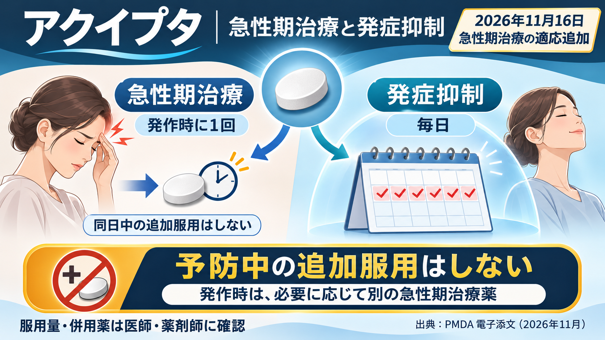

アクイプタ：急性期治療と発症抑制の使い分け
2026年11月16日に追加承認された急性期治療と、従来の発症抑制の違いをまとめた図解です。

図の要点
- 急性期治療：片頭痛発作時に服用。服用後も発作が続く場合、当日の追加服用は行わず、他の急性期治療薬を検討。
- 発症抑制：毎日服用。予防中の発作には必要に応じて本剤以外の急性期治療薬を使用。
- 服用量は腎機能や併用薬で変わります。具体的な使用方法は医師・薬剤師に確認してください。
錠剤と人物は説明用の模式的イメージであり、実際の製品外観や治療効果を示すものではありません。
出典と注意
PMDA：アクイプタ電子添文（2026年11月改訂）に基づいて作成。一般的な医学情報であり、自己判断で治療を変更するための資料ではありません。